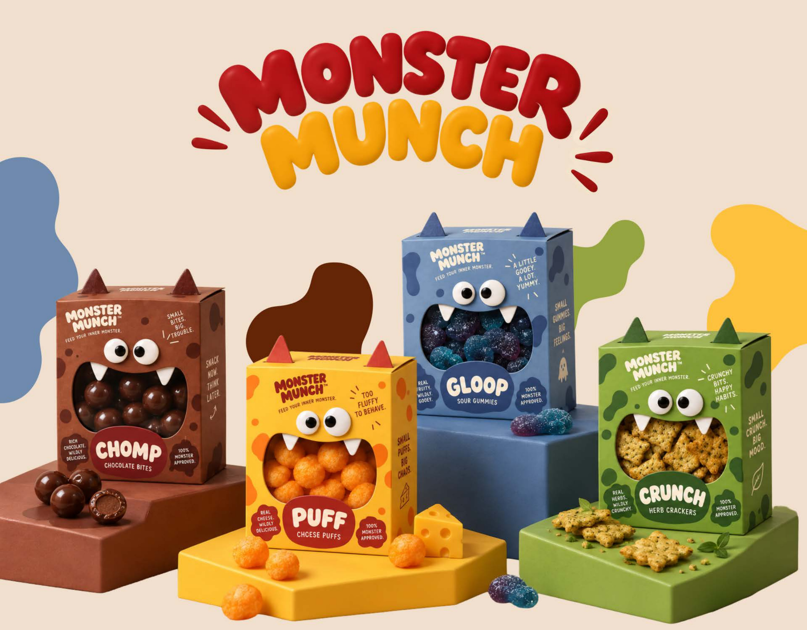
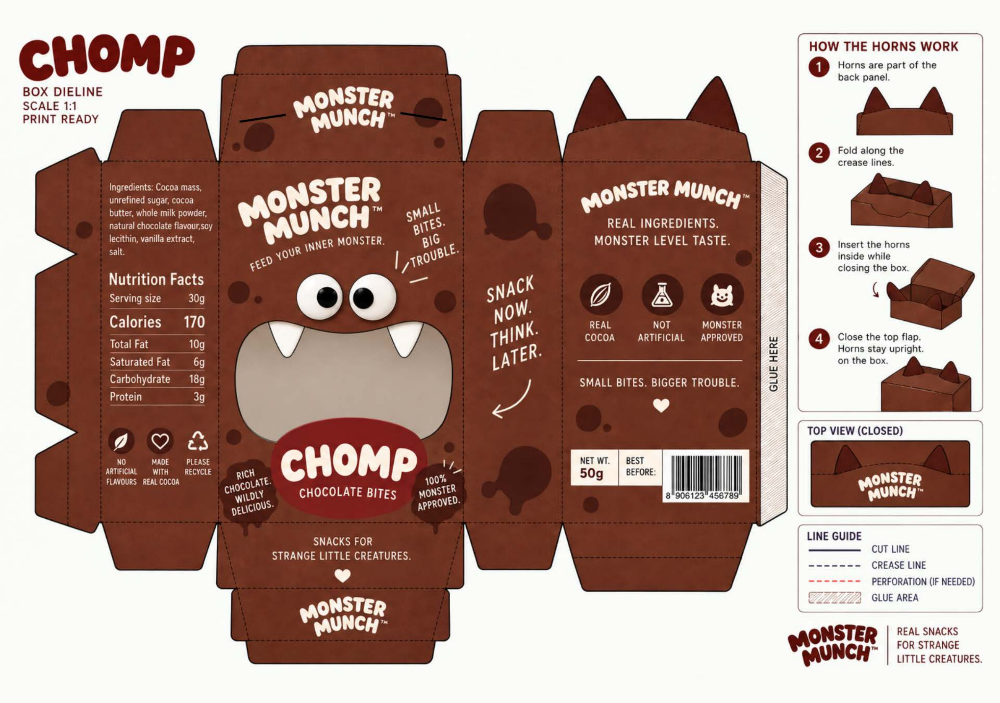
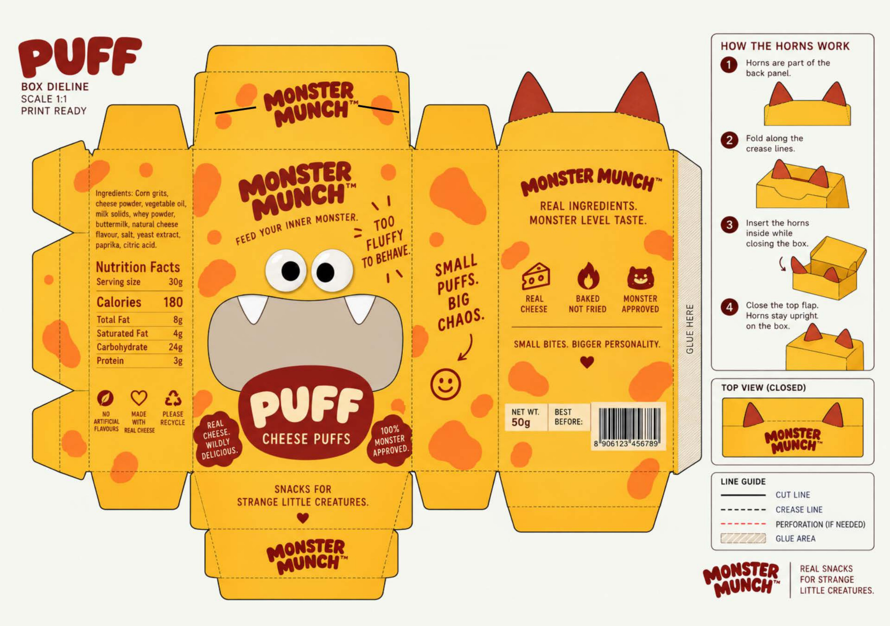
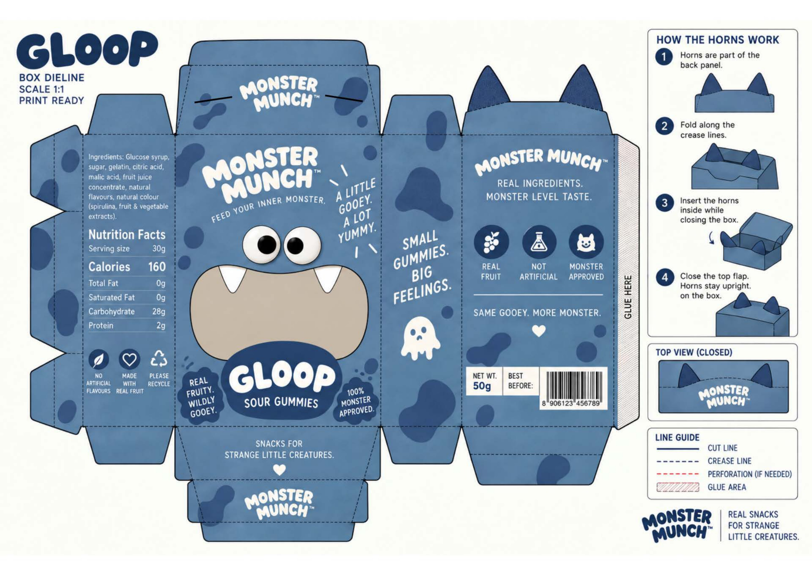
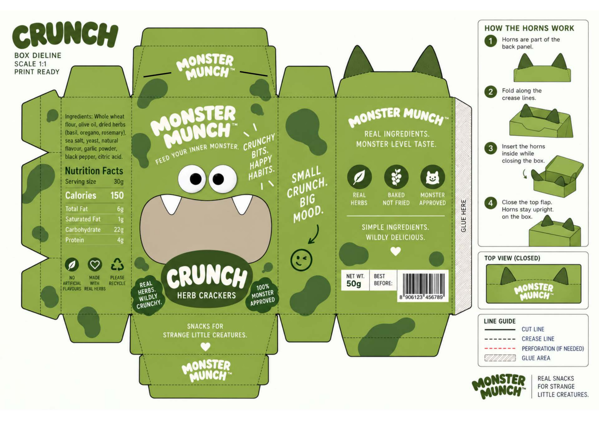
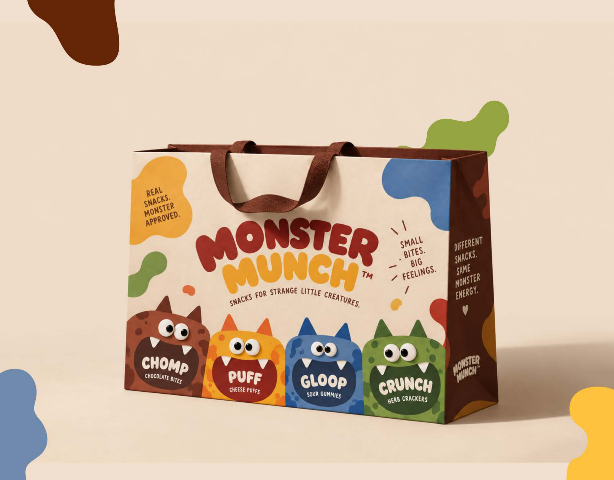

MONSTER MUNCH
PLAYFUL SNACK PACKAGING & CHARACTER SYSTEM
Character Illustration · Structural Dieline Design · Dynamic Colour Framework

MISCHIEVOUS SNACKING
MONSTER MUNCH is a character-driven snack packaging system created to inject vibrant personality, bold humour, and irresistible appetite appeal into the crowded snack aisle.
SHELF STANDOUT
Break away from generic, sterile snack packaging tropes with a distinctive monster mascot universe that connects instantly with youthful, energetic snack enthusiasts.
SCALABLE FLAVOUR SYSTEM
Develop an adaptable packaging dieline and colour framework capable of expressing individual flavour profiles while preserving unmistakable overarching brand identity.
CHOMP — FLAVOUR PACKAGING & DIELINE
CHOMP features a bold, wide-mouthed monster representing intense savoury crunch. The packaging dieline integrates expressive facial geometry, high-impact typography, and a structured nutritional hierarchy designed for maximum shelf visibility.

PUFF — FLAVOUR PACKAGING & DIELINE
PUFF embodies airy, cloud-like cheese indulgence with soft rounded character forms, vibrant golden-yellow palettes, and a playful illustrated narrative across all dieline panels.

GLOOP — FLAVOUR PACKAGING & DIELINE
GLOOP channels tangy, zesty energy through vibrant slime-green hues, quirky character expressions, and playful typographic callouts engineered for instant consumer delight.

CRUNCH — FLAVOUR PACKAGING & DIELINE
CRUNCH delivers explosive heat with intense crimson accents, sharp jagged tooth motifs, and punchy packaging geometry built to command attention in retail snack aisles.

FINAL APPLICATION & RETAIL PAYOFF
The complete printed snack bag application showcasing the high-gloss metallic substrate, vivid colour saturation, and tangible tactile shelf presence of the finished Monster Munch system.
